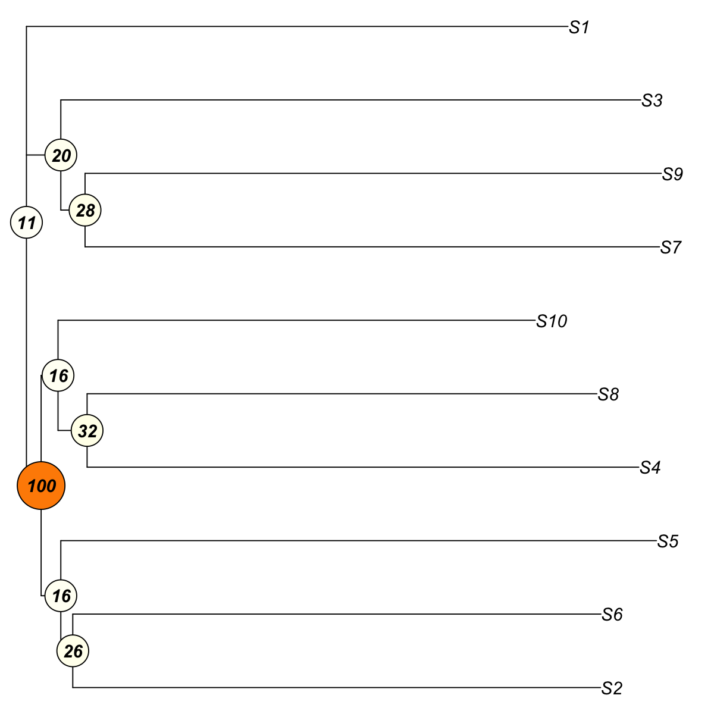
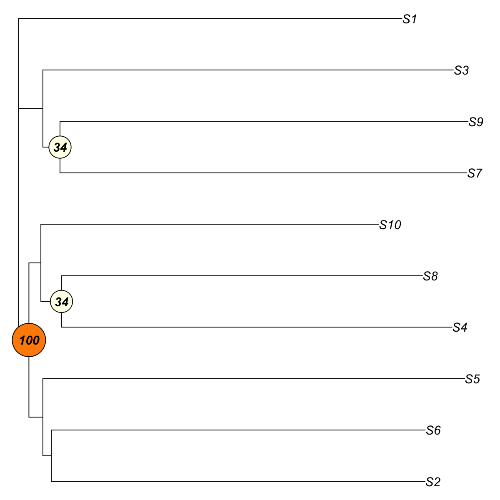

Description
visTreeBootstrap is supposed to build the tree,
perform bootstrap analysis and visualise the bootstrapped
tree. It returns an object of class "phylo". For easy
downstream analysis, the bootstrapped tree is rerooted
either at the internal node with the miminum
bootstrap/confidence value or at any customised internal
node.
Usage
visTreeBootstrap(data, algorithm = c("nj", "fastme.ols", "fastme.bal"), metric = c("euclidean",
"pearson", "spearman", "cos", "manhattan", "kendall", "mi"), num.bootstrap = 100,
consensus = FALSE, consensus.majority = 0.5, reroot = "min.bootstrap", plot.phylo.arg = NULL,
nodelabels.arg = NULL, visTree = T, verbose = T, ...)
Arguments
- data
- an input data matrix used to build the tree.
The built tree describes the relationships between rows
of input matrix
- algorithm
- the tree-building algorithm. It can be
one of "nj" for the neighbor-joining tree estimation,
"fastme.ols" for the minimum evolution algorithm with
ordinary least-squares (OLS) fitting of a metric to a
tree structure, and "fastme.bal" for the minimum
evolution algorithm under a balanced (BAL) weighting
scheme
- metric
- distance metric used to calculate a
distance matrix between rows of input matrix. It can be:
"pearson" for pearson correlation, "spearman" for
spearman rank correlation, "kendall" for kendall tau rank
correlation, "euclidean" for euclidean distance,
"manhattan" for cityblock distance, "cos" for cosine
similarity, "mi" for mutual information
- num.bootstrap
- an integer specifying the number of
bootstrap replicates
- consensus
- logical to indicate whether to return
the consensus tree. By default, it sets to false for not
doing so. Note: if true, there will be no visualisation
of the bootstrapped tree
- consensus.majority
- a numeric value between 0.5 and
1 (or between 50 and 100) giving the proportion for a
clade to be represented in the consensus tree
- reroot
- determines if and how the bootstrapped tree
should be rerooted. By default, it is "min.bootstrap",
which implies that the bootstrapped tree will be rerooted
at the internal node with the miminum
bootstrap/confidence value. If it is an integer between 1
and the number of internal nodes, the tree will be
rerooted at the internal node with this index value
- plot.phylo.arg
- a list of main parameters used in
the function "ape::plot.phylo"
http://www.inside-r.org/packages/cran/ape/docs/plot.phylo.
See 'Note' below for details on the parameters
- nodelabels.arg
- a list of main parameters used in
the function "ape::nodelabels"
http://www.inside-r.org/packages/cran/ape/docs/nodelabels.
See 'Note' below for details on the parameters
- visTree
- logical to indicate whether the bootstrap
tree will be visualised. By default, it sets to true for
display. Note, the consensus tree can not be enabled for
visualisation
- verbose
- logical to indicate whether the messages
will be displayed in the screen. By default, it sets to
true for display
- ...
- additional "ape::plot.phylo" parameters
Value
an object of class "phylo". It can return a bootstrapped
tree or a consensus tree (if enabled): When a
bootstrapped tree is returned (also visualised by
default), the "phylo" object has a list with following
components:
Nnode: the number of
internal nodes node.label: the labels for
internal nodes. Here, each internal node is associated
with the bootstrap value tip.label: the
lables for tip nodes. Tip labels come from the row names
of the input matrix, but are not necessarily the same
order as they appear in the input matrix
edge: a two-column matrix describing the
links between tree nodes (including internal and tip
nodes) edge.length: a vector indicating the
edge length in the 'edge' - Note: the tree structure
is indexed with 1:Ntip for tip nodes, and
(
Ntip+1):(Ntip+Nnode) for internal
nodes, where Ntip is the number of tip nodes and
Nnode for the number of internal nodes. Moreover,
nrow(data)=Ntip=Nnode-2.
When a consensus tree
is returned (no visualisation), the "phylo" object has a
list with following components:
Nnode: the number of internal nodes
tip.label: the lables for tip nodes. Tip
labels come from the row names of the input matrix, but
are not necessarily the same order as they appear in the
input matrix edge: a two-column matrix
describing the links between tree nodes (including
internal and tip nodes)
Note
A list of main parameters used in the function
"ape::plot.phylo":
- "type": a character
string specifying the type of phylogeny to be drawn; it
must be one of "phylogram" (the default), "cladogram",
"fan", "unrooted", "radial" or any unambiguous
abbreviation of these
- "direction": a character
string specifying the direction of the tree. Four values
are possible: "rightwards" (the default), "leftwards",
"upwards", and "downwards"
- "lab4ut": (= labels for
unrooted trees) a character string specifying the display
of tip labels for unrooted trees: either "horizontal"
where all labels are horizontal (the default), or "axial"
where the labels are displayed in the axis of the
corresponding terminal branches. This option has an
effect only if type = "unrooted"
- "edge.color": a
vector of mode character giving the colours used to draw
the branches of the plotted phylogeny. These are taken to
be in the same order than the component edge of phy. If
fewer colours are given than the length of edge, then the
colours are recycled
- "edge.width": a numeric
vector giving the width of the branches of the plotted
phylogeny. These are taken to be in the same order than
the component edge of phy. If fewer widths are given than
the length of edge, then these are recycled
- "edge.lty": same than the previous argument but for
line types; 1: plain, 2: dashed, 3: dotted, 4: dotdash,
5: longdash, 6: twodash
- "font": an integer
specifying the type of font for the labels: 1 (plain
text), 2 (bold), 3 (italic, the default), or 4 (bold
italic)
- "cex": a numeric value giving the factor
scaling of the tip and node labels (Character EXpansion).
The default is to take the current value from the
graphical parameters
- "adj": a numeric specifying
the justification of the text strings of the labels: 0
(left-justification), 0.5 (centering), or 1
(right-justification). This option has no effect if
type="unrooted". If NULL (the default) the value is set
with respect of direction (see details)
- "srt": a
numeric giving how much the labels are rotated in degrees
(negative values are allowed resulting in clock-like
rotation); the value has an effect respectively to the
value of direction (see Examples). This option has no
effect if type="unrooted"
- "no.margin": a logical.
If TRUE, the margins are set to zero and the plot uses
all the space of the device
- "label.offset": a
numeric giving the space between the nodes and the tips
of the phylogeny and their corresponding labels. This
option has no effect if type="unrooted"
- "rotate.tree": for "fan", "unrooted", or "radial"
trees: the rotation of the whole tree in degrees
(negative values are accepted
A list of main
parameters used in the function "ape::nodelabels":
- "text": a vector of mode character giving
the text to be printed. By default, the labels for
internal nodes (see "node.label"), that is, the bootstrap
values associated with internal nodes
- "node": a
vector of mode numeric giving the numbers of the nodes
where the text or the symbols are to be printed. By
default, indexes for internal nodes, that is,
(
Ntip+1):(Ntip+Nnode), where Ntip
is the number of tip nodes and Nnode for the number
of internal nodes
- "adj": one or two numeric values
specifying the horizontal and vertical, respectively,
justification of the text or symbols. By default, the
text is centered horizontally and vertically. If a single
value is given, this alters only the horizontal position
of the text
- "frame": a character string specifying
the kind of frame to be printed around the text. This
must be one of "rect" (the default), "circle", "none", or
any unambiguous abbreviation of these
- "cex": a
numeric value giving the factor scaling of the tip and
node labels (Character EXpansion). The default is to take
the current value from the graphical parameters
- "font": an integer specifying the type of font for
the labels: 1 (plain text), 2 (bold), 3 (italic, the
default), or 4 (bold italic)
- "col": a character
string giving the color to be used for the text or the
plotting symbols; this is eventually recycled
- "bg": a character string giving the color to be
used for the background of the text frames or of the
plotting symbols if it applies; this is eventually
recycled. It can be one of "jet" (jet colormap), "bwr"
(blue-white-red colormap), "gbr" (green-black-red
colormap), "wyr" (white-yellow-red colormap), "br"
(black-red colormap), "yr" (yellow-red colormap), "wb"
(white-black colormap), and "rainbow" (rainbow colormap,
that is, red-yellow-green-cyan-blue-magenta).
Alternatively, any hyphen-separated HTML color names,
e.g. "blue-black-yellow", "royalblue-white-sandybrown",
"darkgreen-white-darkviolet". A list of standard color
names can be found in
http://html-color-codes.info/color-names
Examples
# 1) generate an iid normal random matrix of 100x10
data <- matrix( rnorm(100*10,mean=0,sd=1), nrow=100, ncol=10)
colnames(data) <- paste(rep('S',10), seq(1:10), sep="")
data <- t(data)
# 2) build neighbor-joining tree with bootstrap values and visualise it by default
visTreeBootstrap(data)
Start at 2014-03-25 12:25:45
First, build the tree (using nj algorithm and euclidean distance) from input matrix (10 by 100)...
Second, perform bootstrap analysis with 100 replicates...
Finally, visualise the bootstrapped tree...
Finish at 2014-03-25 12:25:45
Runtime in total is: 0 secs

Phylogenetic tree with 10 tips and 8 internal nodes.
Tip labels:
S2, S6, S5, S7, S9, S3, ...
Node labels:
7, 100, 12, 17, 8, 14, ...
Unrooted; includes branch lengths.
# 3) only display those internal nodes with bootstrap values > 30
# 3a) generate the bootstrapped tree (without visualisation)
tree_bs <- visTreeBootstrap(data, visTree=FALSE)
Start at 2014-03-25 12:25:46
First, build the tree (using nj algorithm and euclidean distance) from input matrix (10 by 100)...
Second, perform bootstrap analysis with 100 replicates...
Finally, visualise the bootstrapped tree...
Finish at 2014-03-25 12:25:46
Runtime in total is: 0 secs
# 3b) look at the bootstrap values and ordered row names of input matrix
# the bootstrap values
tree_bs$node.label
[1] "7" "100" "14" "15" "17" "31" "18" "31"
# ordered row names of input matrix
tree_bs$tip.label
[1] "S2" "S6" "S5" "S4" "S8" "S10" "S7" "S9" "S3" "S1"
# 3c) determine internal nodes that should be displayed
Ntip <- length(tree_bs$tip.label) # number of tip nodes
Nnode <- length(tree_bs$node.label) # number of internal nodes
flag <- as.numeric(tree_bs$node.label) > 30
text <- tree_bs$node.label[flag]
node <- Ntip + (1:Nnode)[flag]
visTreeBootstrap(data, nodelabels.arg=list(text=text,node=node))
Start at 2014-03-25 12:25:46
First, build the tree (using nj algorithm and euclidean distance) from input matrix (10 by 100)...
Second, perform bootstrap analysis with 100 replicates...
Finally, visualise the bootstrapped tree...
Finish at 2014-03-25 12:25:46
Runtime in total is: 0 secs

Phylogenetic tree with 10 tips and 8 internal nodes.
Tip labels:
S2, S6, S5, S4, S8, S10, ...
Node labels:
7, 100, 13, 18, 12, 30, ...
Unrooted; includes branch lengths.
# 4) obtain the consensus tree
tree_cons <- visTreeBootstrap(data, consensus=TRUE, num.bootstrap=10)
Start at 2014-03-25 12:25:46
First, build the tree (using nj algorithm and euclidean distance) from input matrix (10 by 100)...
Second, perform bootstrap analysis with 10 replicates...
Finally, obtain consensus tree based on 0.50 majority...
Finish at 2014-03-25 12:25:46
Runtime in total is: 0 secs
){kind=link}
){kind=link}